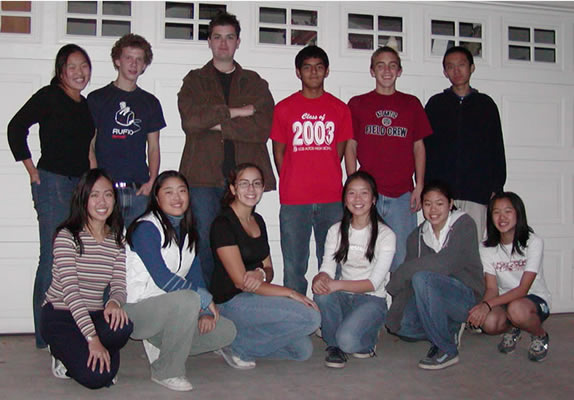
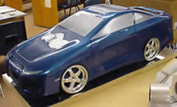
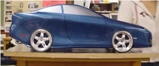
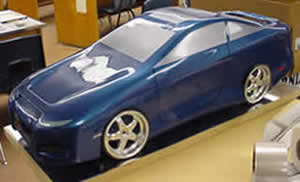
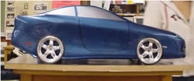

Chrysler
Build Your Your Own Dream Vehicle |


“The Chrysler "Build Your Dream Vehicle" (BYDV) program offers high school students and teachers a program that integrates technology and career education into the academic core curriculum. Teamwork, marketing, finance design, and communication strategies encourage the application of learning to real-life situations.

BYDV requires students to use mathematics, science, social studies, language
arts, technology, and design skills to develop and design a vehicle. Keeping
in the spirit of cutting-edge design and technology that we promote through
our vehicles, students and teachers will explore any and all leading manufacturers
and innovators of design as sources of inspiration. Students are encouraged
to make connections between what they learn in the classroom and the application
of their learning after they leave school.”
Visit http://www.chrysler.com for
more information.
Click Here for a Chrysler Vehicle Photo Gallery
 

Click Here for Chrysler
Team Updates!

© Los Altos Academy of Engineering, Wednesday, 12/10/2003 18:14 -8:00 GMT